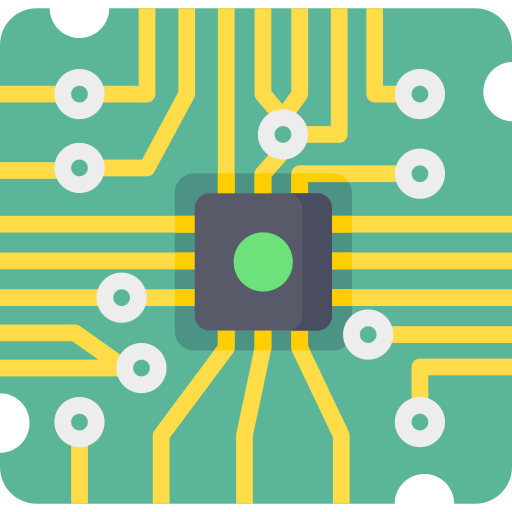
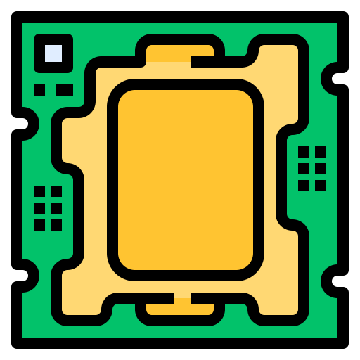

CPU

-Intel® Socket 1151 9/8 generacji Intel® Core™
- Pamięć 4 x DIMM, Max. 64GB, DDR4 Dwukanałowa architektura pamięci
Obsługa Intel® Extreme Memory Profile (XMP)
* Obsługa Hyper DIMM zależy od cech indywidualnych procesorów.
PCIE
-2 x PCIe 3.0 x16 (x16 lub dwa x8 lub x8/x4/x4)
M.2
x gniazdo M.2 Socket 3, gniazdo M.2 3 z klawiszem M, obsługa nośników pamięci typu 2242/2260/2280 (tryb SATA i tryb PCIE 3.0 x 4)*2
LAN
Intel I219-V Gb LAN ROG GameFirst V
Anti-surge LANGuard
Sata
6 x port SATA 6Gb/s
Audio
OG SupremeFX 8-kanałowe Kodek High Definition Audio
- Czujnik impedancji zarówno na przednim, jak i na tylnym wyjściu na słuchawki
- Obsługa : wykrywanie wtyczki, wiele strumieni, zmianę przeznaczenia gniazda na panelu przednim
- Obsługuje odtwarzania do 32-bit/192kHz*3
Intel® Z390

The Intel® Z390
USB
1 złącza USB 3.1 Gen 1(do 5Gbps) – obsługują dodatkowe 2 porty USB 3.1 Gen 1
2 złącza USB 2.0 – obsługują dodatkowe 4 porty USB 2.0
EPS
1 x 8-pin EATX 12V Power connectors
Legenda
Intel® Socket 1151 9/8 generacji Intel® Core™, Pentium® Gold oraz Celeron® Procesory
Obsługa procesora Intel® 14 nm
Obsługuje Intel® Turbo Boost Technology 2.0
* Obsługa Intel® Turbo Boost Technology 2.0 zależy od rodzaju procesora.
Obsługa procesora Intel® 14 nm
Obsługuje Intel® Turbo Boost Technology 2.0
* Obsługa Intel® Turbo Boost Technology 2.0 zależy od rodzaju procesora.
-2 x PCIe 3.0 x16 (x16 lub dwa x8 lub x8/x4/x4)
PCI Express 3.0 7.877 Gbit/s (984.625 MB/s) 126.032 Gbit/s (15754 MB/s)
PCI Express 3.0 7.877 Gbit/s (984.625 MB/s) 126.032 Gbit/s (15754 MB/s)
Pamięć 4 x DIMM, Max. 64GB, DDR4 Dwukanałowa architektura pamięci
Obsługa Intel® Extreme Memory Profile (XMP)
* Obsługa Hyper DIMM zależy od cech indywidualnych procesorów.
M.2 Socket 3, gniazdo M.2 3 z klawiszem M, obsługa nośników pamięci typu 2242/2260/2280 (tryb SATA i tryb PCIE 3.0 x 4)*2
Both M.2 2242 and M.2 2280 offer you almost the same options. The Host interface rates are 6 Gb per sec. Both of them are backward compatible at 3 Gb per sec and 1.5 Gb per sec transfer speeds.
Both M.2 2242 and M.2 2280 offer you almost the same options. The Host interface rates are 6 Gb per sec. Both of them are backward compatible at 3 Gb per sec and 1.5 Gb per sec transfer speeds.
OG SupremeFX 8-kanałowe Kodek High Definition Audio
- Czujnik impedancji zarówno na przednim, jak i na tylnym wyjściu na słuchawki
- Obsługa : wykrywanie wtyczki, wiele strumieni, zmianę przeznaczenia gniazda na panelu przednim
- Obsługuje odtwarzania do 32-bit/192kHz*3
6 x port SATA 6Gb/s
1 x 8-pin EATX 12V Power connectors
10 x USB 3.1 Gen1 Ports
4 x USB3.1 Gen2 ports
(Type-A + Type-C)
Intel® I219V, 1 x kontroler Gigabit LAN , podwójny łącznik między zintegrowaną podwarstwą sterowania dostępem do nośnika (MAC) i warstwą fizyczną (PHY)
The Intel® Z390 is a single-chipset design that supports Socket 1151 for 9th Gen and 8th Gen Intel® Core™, Pentium® Gold and Celeron® processors. It provides improved performance by utilizing serial point-to-point links, allowing increased bandwidth and stability. Additionally, the chipset provides a maximum of six USB 3.1 Gen 2 ports, four USB 3.1 Gen 1 ports, and 32Gbps M.2 and PCIe 3.0 lane speed support, for faster data retrieval. Intel Z390 also supports integrated-graphics, so you'll enjoy the very latest in graphics performance.